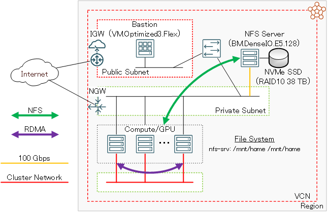

0. 概要
BM.DenseIO.E5.128 は、6.8 TBのNVMe SSDを12台ローカル接続し、ストレージに高いスループットとIOPSを要求する様々なワークロード用途に最適なベア・メタル・シェイプです。
また BM.DenseIO.E5.128 は、100 GbpsのTCP/IP接続用ポートを1個搭載し、NVMe SSDローカルディスクに構築するストレージを外部にサービスする際、100 Gbpsの帯域を全てクライアントへのサービスに割当てることで、ストレージとのアクセスにiSCSI接続によるネットワーク帯域を消費する ブロック・ボリューム を使用する場合と比較し、高速なストレージサービスサーバとして利用することが出来ます。
これに対して BM.DenseIO.E5.128 のNVMe SSDローカルディスクを使用するストレージサービスは、 ブロック・ボリューム を使用する場合と比較し、以下の点を考慮する必要があります。（※1）
※1）この比較詳細は、 OCI HPCテクニカルTips集 の HPC/GPUクラスタ向けファイル共有ストレージの最適な構築手法 を参照してください。
- NVMe SSDローカルディスク上のデータ保護を自身で行う必要がある
- ベア・メタル・インスタンスの故障でNVMe SSDローカルディスク上のデータを消失するリスクがある
- データ格納容量が最大で38 TB程度（RAID10でファイルシステムを構成した場合）に限定され拡張出来ない
本チュートリアルは、これらの考慮点に対して以下のアプローチを取り、
- ソフトウェアRAIDによるRAID10で最低限の可用性を確保
- NVMe SSDローカルディスク上のファイルを定期的に他の長期保存ストレージにバックアップ（対象を短期保存データに限定）（※2）
- 2. のアプローチでバックアップの後ファイルを削除して空き容量を確保
※2）このバックアップ環境の構築は、 OCI HPCチュートリアル集 の ベア・メタル・インスタンスNFSサーバ向けバックアップサーバを構築する を参照してください。
以下構成の短期保存データの格納を目的とするNFSでサービスする高速なファイル共有ストレージ（以降”DenceIO NFSサーバ”と呼称）を構築します。
- NFSサーバ
- シェイプ ： BM.DenseIO.E5.128
- OS ： Oracle Linux 9.4（Oracle-Linux-9.4-2024.07.31-0 UEK）
- ソフトウェアRAID・NFS ： OS付属のものを利用
- RAID構成
- RAIDレベル ： RAID10
- Placement ： f2
- Stripe width ： 6
- Chunk size / Stripe unit ： 512 KB
- ファイルシステム容量 ： 38 TB
- 起動nfsdスレッド数 ： 128

本チュートリアルで構築するDenceIO NFSサーバは、以下の条件でファイルシステムベンチマークを実行し検証しています。
- ベンチマークツール ： IO500 ISC20に含まれる IOR と mdtest
- NFSクライアント
- シェイプ ： VM.Standard2.24
- OS ： Oracle Linux 8.10（Oracle-Linux-8.10-2024.06.30-0 UEK）
- ノード数 ： 8
- IOR / mdtest 実行時MPIプロセス数 ： 128（ノード当たり16）
この IOR と mdtest の検証結果は、 OCI HPCテクニカルTips集 の HPC/GPUクラスタ向けファイル共有ストレージの最適な構築手法 の 2-1. コストパフォーマンスによる比較 を参照してください。
所要時間 : 約1時間
前提条件 : DenceIO NFSサーバを収容するコンパートメント(ルート・コンパートメントでもOKです)の作成と、このコンパートメントに対する必要なリソース管理権限がユーザーに付与されていること。
注意 : 本コンテンツ内の画面ショットは、現在のOCIコンソール画面と異なっている場合があります。
1. 事前作業
1-0. 概要
本章は、NFSサーバと計算/GPUノードをTCP接続する 仮想クラウド・ネットワーク と、通常インターネットから直接アクセス出来ないプライベートサブネットに接続するNFSサーバと計算/GPUノードにログインする際の踏み台となるBastionノードを予め用意します。
1-1. 仮想クラウド・ネットワーク作成
本章は、NFSサーバと計算/GPUノードを接続する 仮想クラウド・ネットワーク を作成します。
仮想クラウド・ネットワーク の作成は、 OCIチュートリアル の その2 - クラウドに仮想ネットワーク(VCN)を作る の手順通りに実行し、以下のリソースを作成します。
- 仮想クラウド・ネットワーク （10.0.0.0/16）
- パブリックサブネット
- プライベートサブネット
- インターネット・ゲートウェイ （パブリックサブネットにアタッチ）
- NATゲートウェイ （プライベートサブネットにアタッチ）
- サービス・ゲートウェイ （プライベートサブネットにアタッチ）
- ルート表 x 2（パブリックサブネットとプライベートサブネットにアタッチ）
- セキュリティリスト x 2（パブリックサブネットとプライベートサブネットにアタッチ）
この 仮想クラウド・ネットワーク は、 セキュリティリスト で以下のアクセス制限が掛けられています。
- インターネットからのアクセス：パブリックサブネットに接続されるインスタンスの22番ポート（SSH）に限定
- インターネットへのアクセス：インターネット上の任意のIPアドレス・ポートに制限なくアクセス可能
1-2. Bastionノード作成
本章は、NFSサーバにログインする際の踏み台となるBastinノードを作成します。
Bastionノードの作成は、 OCIチュートリアル の その3 - インスタンスを作成する の手順を参考に、自身の要件に沿ったインスタンスを先の手順で 仮想クラウド・ネットワーク を作成した コンパートメント とパブリックサブネットを指定して作成します。
本チュートリアルは、以下属性のインスタンスをBastionノードとして作成します。
- イメージ ： Oracle Linux 8.10
- シェイプ ： VM.Optimized3.Flex （任意のコア数・メモリ容量）
- SSHキーの追加 ： Bastionノードにログインする際使用するSSH秘密鍵に対応する公開鍵
次に、このBastionノード上でSSHの鍵ペアを作成します。このSSH鍵は、BastionノードからNFSサーバにログインする際に使用します。
先のチュートリアル インスタンスを作成する に記載のインスタンスへの接続方法に従い、BastionノードにopcユーザでSSHログインして以下コマンドでSSH鍵ペアを作成、作成された公開鍵を後のNFSサーバ用インスタンス作成手順で指定します。
$ ssh-keygen
Generating public/private rsa key pair.
Enter file in which to save the key (/home/opc/.ssh/id_rsa):
Enter passphrase (empty for no passphrase):
Enter same passphrase again:
Your identification has been saved in /home/opc/.ssh/id_rsa.
Your public key has been saved in /home/opc/.ssh/id_rsa.pub.
The key fingerprint is:
SHA256:2EvR7FXtEYAsDknJG1oREie1kv2r1PN3OYrYCP/Xlyg opc@bast
The keys randomart image is:
+---[RSA 2048]----+
| +=*= . ..oo.|
| *B.+ o . ..|
| ooo* + . ..|
| ..+.+ . .|
| . S.. |
| .... |
| o.+ o o|
| . + *E.+ *.|
| . +.=+.o o|
+----[SHA256]-----+
$ cat .ssh/id_rsa.pub
ssh-rsa AAAAB3NzaC1yc2EAAAADAQABAAABAQD0TDo4QJPbXNRq/c5wrc+rGU/dLZdUziHPIQ7t/Wn+00rztZa/3eujw1DQvMsoUrJ+MHjE89fzZCkBS2t4KucqDfDqcrPuaKF3+LPBkgW0NdvytBcBP2J9zk15/O9tIVvsX8WBi8jgPGxnQMo4mQuwfvMh1zUF5dmvX3gXU3p+lH5akZa8sy/y16lupge7soN01cQLyZfsnH3BA7TKFyHxTe4MOSHnbv0r+6Cvyy7Url0RxCHpQhApA68KBIbfvhRHFg2WNtgggtVGWk+PGmTK7DTtYNaiwSfZkuqFdEQM1T6ofkELDruB5D1HgDi3z+mnWYlHMNHZU5GREH66acGJ opc@bast
$
次に、以降作成するNFSサーバの名前解決をインスタンス名で行うため、 OCI HPCテクニカルTips集 の 計算ノードの効果的な名前解決方法 の手順を実施します。
2. 計算/GPUノード作成
本章は、DenceIO NFSサーバのNFSクライアントとなる計算/GPUノードを作成します。
この構築手順は、 OCI HPCチュートリアル集 の HPCクラスタ カテゴリや 機械学習環境 カテゴリの各チュートリアルを参照してください。
3. DenceIO NFSサーバ環境構築
3-0. 概要
本章は、DenceIO NFSサーバ環境を構築します。
この構築は、以下の手順を経て行います。
- NFSサーバインスタンス作成
- NVMe SSDローカルディスク領域ファイルシステム作成
- NFSサーバ環境構築
- NFSクライアントでのファイルシステムマウント
3-1. NFSサーバインスタンス作成
本章は、NFSサーバインスタンスを作成します。
NFSサーバインスタンスの作成は、 OCIチュートリアル の その3 - インスタンスを作成する の手順を参考に、以下属性のインスタンスを先の手順で 仮想クラウド・ネットワーク を作成した コンパートメント とプライベートサブネットを指定して作成します。
- 名前 ： インスタンスの名前（イニシャルホスト名）（本チュートリアルでは nfs-srv）
- イメージ ： Oracle Linux 9 (2024.07.31-0)
- シェイプ ： BM.DenseIO.E5.128
- SSHキーの追加 ： 1-2. Bastionノード作成 で作成したSSH鍵公開鍵
NFSサーバインスタンスが 実行中 となったら、先に作成したBastionノードからopcユーザでSSHログインします。
次に、以下コマンドをopcユーザで実行し、12台のNVMe SSDローカルディスクが接続されていることを確認します。
$ lsblk | grep ^nvme | sort -k 1.5,1.6 -n
nvme0n1 259:7 0 6.2T 0 disk
nvme1n1 259:2 0 6.2T 0 disk
nvme2n1 259:4 0 6.2T 0 disk
nvme3n1 259:6 0 6.2T 0 disk
nvme4n1 259:3 0 6.2T 0 disk
nvme5n1 259:1 0 6.2T 0 disk
nvme6n1 259:10 0 6.2T 0 disk
nvme7n1 259:11 0 6.2T 0 disk
nvme8n1 259:9 0 6.2T 0 disk
nvme9n1 259:0 0 6.2T 0 disk
nvme10n1 259:5 0 6.2T 0 disk
nvme11n1 259:8 0 6.2T 0 disk
$
3-2. NVMe SSDローカルディスク領域ファイルシステム作成
本章は、NFSサーバインスタンスでNVMe SSDローカルディスクにファイルシステムを作成します。
以下コマンドをopcユーザで実行し、NVMe SSDローカルディスクにRAID10のファイルシステムを作成しこれを /mnt/nvme_raid にマウントします。
$ sudo mdadm --create /dev/md0 --raid-devices=12 --level=10 --chunk=8M --layout=f2 --assume-clean /dev/nvme0n1 /dev/nvme1n1 /dev/nvme2n1 /dev/nvme3n1 /dev/nvme4n1 /dev/nvme5n1 /dev/nvme6n1 /dev/nvme7n1 /dev/nvme8n1 /dev/nvme9n1 /dev/nvme10n1 /dev/nvme11n1
$ sudo pvcreate /dev/md0
$ sudo vgcreate nvme /dev/md0
$ sudo lvcreate -y -l 100%FREE -n nvme_raid nvme
$ sudo mkfs.xfs -d su=8m,sw=6 -L nvme_raid /dev/nvme/nvme_raid
$ echo "LABEL=nvme_raid /mnt/nvme_raid/ xfs defaults,noatime 0 0" | sudo tee -a /etc/fstab
$ sudo systemctl daemon-reload
$ sudo mkdir -p /mnt/nvme_raid
$ sudo mount /mnt/nvme_raid
次に、以下コマンドをopcユーザで実行し、マウントしたファイルシステムを確認します。
$ df -h /mnt/nvme_raid
Filesystem Size Used Avail Use% Mounted on
/dev/mapper/nvme-nvme_raid 38T 266G 37T 1% /mnt/nvme_raid
$
3-3. NFSサーバ環境構築
本章は、NFSサーバインスタンスでNFSサーバ環境を構築します。
以下コマンドをNFSサーバインスタンスのopcユーザで実行し、NFSサーバを起動してNVMe SSDローカルディスクに作成したファイルシステムがエクスポートされていることを確認します。
$ echo "/mnt/nvme_raid 10.0.0.0/16(rw,sync,no_root_squash)" | sudo tee -a /etc/exports
/mnt/nvme_raid 10.0.0.0/16(rw,sync,no_root_squash)
$ sudo sed -i 's/# threads=8/threads=128/g' /etc/nfs.conf
$ sudo systemctl enable --now nfs-server rpcbind
Created symlink /etc/systemd/system/multi-user.target.wants/nfs-server.service → /usr/lib/systemd/system/nfs-server.service.
$ sudo exportfs
/mnt/nvme_raid 10.0.0.0/16
$
3-4. NFSクライアントでのファイルシステムマウント
本章は、DenceIO NFSサーバのNFSクライアントとなる計算/GPUノードで、当該領域をNFSマウントします。
以下コマンドを計算/GPUノードのopcユーザで実行し、DenceIO NFSサーバ領域をNFSマウントします。
$ echo "nfs-srv:/mnt/nvme_raid /mnt/nvme_raid nfs vers=3,defaults,noatime,nodiratime,bg,timeo=100,ac,actimeo=120,nocto,rsize=1048576,wsize=1048576,nolock,local_lock=none,proto=tcp,sec=sys,_netdev 0 0" | sudo tee -a /etc/fstab
$ sudo systemctl daemon-reload
$ sudo mkdir -p /mnt/nvme_raid
$ sudo mount /mnt/nvme_raid
次に、以下コマンドを計算/GPUノードのopcユーザで実行し、マウントしたファイルシステムを確認します。
$ df -h /mnt/nvme_raid
Filesystem Size Used Avail Use% Mounted on
/dev/mapper/nvme-nvme_raid 38T 266G 37T 1% /mnt/nvme_raid
$
これで、このチュートリアルは終了です。